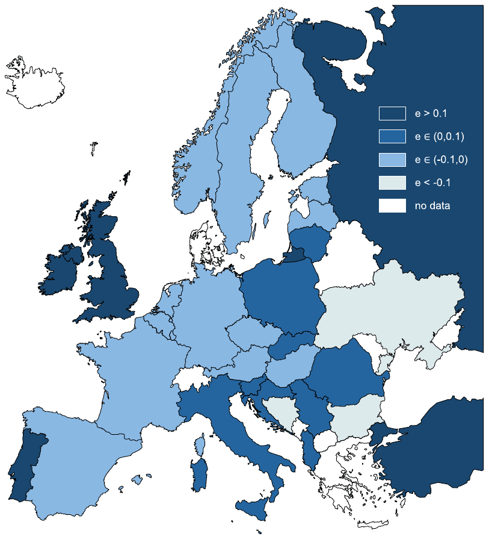
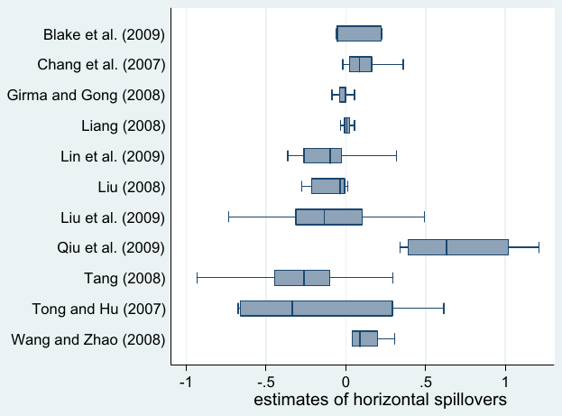
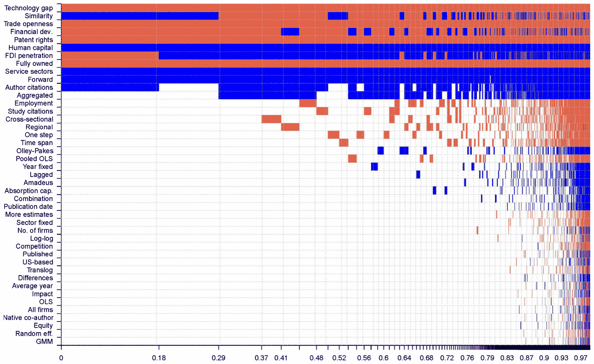
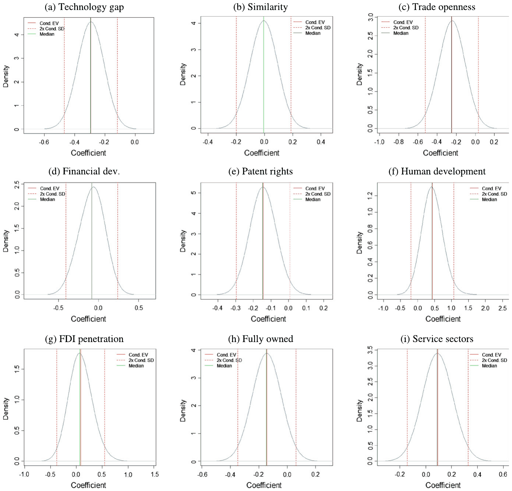
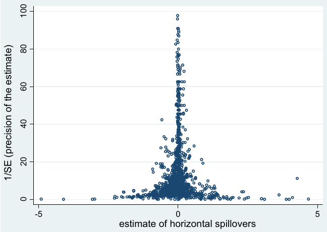
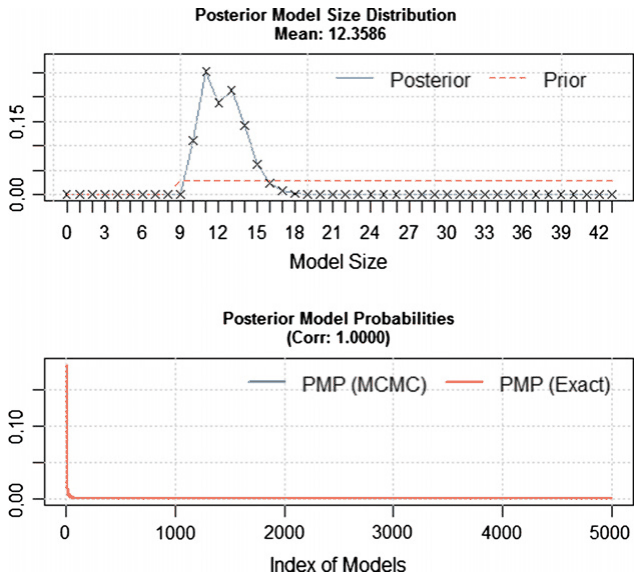

Zuzana Irsova & Tomas Havranek (2013), "Determinants of Horizontal Spillovers from FDI: Evidence from a Large Meta-Analysis." World Development 42, 1-15. https://doi.org/10.1016/j.worlddev.2012.07.001.
ZUZANA IRŠOVÁ
Charles University in Prague, Czech Republic
and
TOMÁŠ HAVRÁNEK
Czech National Bank, Prague, Czech Republic
Charles University in Prague, Czech Republic
We are grateful to Joze Damijan, Ziliang L. Deng, Adam Gersl, Galina Hale, Chidambaran Iyer, Molly Lesher, Marcella Nicolini, Pavel Vacek, and Katja Zajc-Kejzar for sending us additional data, or explaining the details of their methodology, or both. We thank Martin Feldkircher, Maria Paula Fontoura, Petr Kral, Katerina Smidkova, and three anonymous referees of World Development for their helpful comments on an earlier version of the manuscript. Tomas Havranek acknowledges support from the Czech Science Foundation (Grant #P402/11/0948). Zuzana Irsova acknowledges support from the Grant Agency of Charles University (Grant #76810). Corresponding author: Zuzana Irsova, zuzana.irsova@ies-prague.org. An online appendix with data, a Stata program, and a list of excluded studies are available at meta-analysis.cz/bma/. The views expressed here are ours and not necessarily those of our institutions. All remaining errors are solely our responsibility. Final revision accepted: July 6, 2012.
Abstract
The voluminous empirical research on horizontal productivity spillovers from foreign investors to domestic firms has yielded mixed results. In this paper we collect 1,205 estimates of spillovers and examine which factors influence spillover magnitude. Our results suggest that horizontal spillovers are on average zero, but that their sign and magnitude depend systematically on the characteristics of the domestic economy and foreign investors. Foreign investors who form joint ventures with domestic firms and who come from countries with a modest technology edge create the largest benefits for the domestic economy.
Keywords: Bayesian model averaging, foreign direct investment, productivity spillovers, determinants, meta-analysis
1. INTRODUCTION
With the rise in global flows of foreign direct investment (FDI) in recent decades, the policy competition for FDI among transition and developing countries has intensified. Consequently, many researchers have focused on the economic rationale of FDI incentives (Blomstrom & Kokko, 2003, provide a review). The major hypothesis examined in the literature states that domestic firms may indirectly benefit from FDI: it is assumed that knowledge "spills over" from foreign investors or their acquired firms and helps domestic firms augment their productivity. (There is now solid evidence that FDI directly increases the productivity of the acquired firms; see Arnold and Javorcik, 2009, for the case of Indonesia.) Nevertheless, the reported estimates of these "productivity spillovers" differ greatly in terms of both the statistical significance of the effect and its magnitude.
We build on the work of Crespo and Fontoura (2007), who review the literature on the determinants of FDI spillovers and thoroughly discuss the numerous factors that may cause the spillover effects to vary. Whereas the survey of Crespo and Fontoura (2007) is narrative, we examine spillover determinants using a quantitative method of literature surveys: meta-analysis. Meta-analysis was originally developed in medicine to aggregate costly clinical trials, and it has been widely used in economics to investigate the heterogeneity in reported results since the pioneering contribution of Stanley and Jarrell (1989). Recent applications of meta-analysis in economics include, among others, Card, Kluve, and Weber (2010) on the evaluation of active labor market policies, Rusnak, Havranek, and Horvath (in press) on the effect of monetary policy on prices, and Babecky and Campos (2011) on the relation between structural reforms and economic growth in transition countries. In our case, meta-analysis makes use of evidence reported for many countries and different types of investment projects, enabling us to investigate hypotheses that are difficult to address in single-country case studies.
In the search for spillover determinants we focus on the characteristics of FDI host and source countries, foreign firms, and domestic firms in the host country. Moreover, we collect an extensive set of 34 control variables that may help explain the differences in reported findings, including the aspects of data used by primary studies on FDI spillovers, their methodology, publication quality, and author characteristics. To find the most important determinants we employ Bayesian model averaging. Bayesian model averaging is suitable for meta-analysis because of the inherent model uncertainty: while there is a consensus in the literature that some factors may mediate productivity spillovers (such as the technology gap, trade openness, or financial development), it is not clear which aspects of study design are important. Nevertheless, omission of these control variables may lead to biased estimates of coefficients for the main variables of interest. Bayesian model averaging allows us to concentrate on potential spillover determinants while taking all method variables into account.
In this paper we meta-analyze horizontal spillovers from FDI; that is, the effects of foreign investment on domestic firms in the same sector (as opposed to vertical spillovers, which denote the effect of FDI on domestic firms in supplier or customer sectors). To our knowledge, there have been two meta-analyses of horizontal spillovers: Gorg and Strobl (2001) and Meyer and Sinani (2009). The meta-analysis by Gorg and Strobl (2001) concentrates on the effect of study design on reported spillover coefficients and additionally tests for publication bias. Meyer and Sinani (2009) examine country heterogeneity in the estimates of spillovers. Compared with the earlier meta-analyses, we gather a more homogeneous sample of estimates so that we are able to examine the economic effect of spillovers. Moreover, we collect ten times more estimates of spillovers and investigate three times more factors that may explain spillover heterogeneity than Meyer and Sinani (2009), the larger of the earlier meta-analyses. We also revisit the issue of publication bias in the literature on horizontal spillovers from FDI employing modern meta-regression methods developed by Stanley (2005, 2008).
The paper is structured as follows. Section 2 describes the properties of the data set of spillover estimates. Section 3 introduces the potential spillover determinants and the methodology of Bayesian model averaging. Section 4 presents estimation results. In Section 5 we test for publication bias in the literature. Section 6 provides a summary and policy implications.
2. DATA SET
Our data set comprises evidence on FDI spillovers from 45 countries reported in 52 distinct empirical studies; the list of the studies used in the meta-analysis is available in the Appendix (Table 5). To increase the comparability of the estimates in our sample, we only include modern empirical studies that examine horizontal spillovers together with vertical spillovers in the same specification.1 The first empirical studies on vertical spillovers appeared in the early 2000s, and thus we do not use any studies published before 2000—in contrast with the earlier meta-analyses on horizontal spillovers (Gorg & Strobl, 2001; Meyer & Sinani, 2009), in which the pre-2000 studies account for most of the data. The pre-2000 studies were so heterogeneous in terms of methodology that it was not possible to compare directly the economic effects reported in the studies; instead, the earlier meta-analyses used measures of statistical significance, especially t-statistics. In the modern literature on FDI spillovers, most of the researchers examine how changes in the ratio of foreign presence affect the productivity of domestic firms, and estimate a variant of the following general model:
where is a measure of the productivity of domestic firm i in sector j, is the ratio of foreign presence in sector j (the ratio ranges from 0 to 1), is the ratio of foreign presence in sectors that buy intermediate products from firms in sector j, and is the ratio of foreign presence in sectors that sell intermediate products to firms in sector j. Together, backward and forward spillovers form vertical spillovers. denotes control variables included in the regression—for example, the degree of competition in sector j.
These "FDI spillover regressions" are usually run on firm-level panel data, but some primary studies still use cross-sectional data or data aggregated at the sectoral level (for example when examining countries for which better data are not available). Total factor productivity (TFP) is usually employed as the left-hand-side variable, but some studies use output, value added, or labor productivity. Foreign presence is most commonly measured as the share of output of foreign firms on the total output of all firms in the sector, but sometimes researchers use the share of employment or equity. In some specifications researchers control for other firm-level characteristics (such as, for instance, R&D spending) or sector-level characteristics (Herfindahl–Hirschman Index of competition among firms in the sector).
Some of the methods used in these papers are considered obsolete by the majority of researchers; for example, Gorg and Strobl (2001) showed that the use of cross-sectional instead of panel data often results in biased estimates of the spillover effect. Nevertheless, different researchers have different opinions on what constitutes the best practice in FDI spillover regressions (for example, whether the Olley–Pakes or Levinsohn–Petrin method should be used to compute TFP), and we thus follow the advice of Stanley (2001) and "better err on the side of inclusion" in our meta-analysis. If we excluded studies that do not correspond to a particular definition of best practice, we would greatly increase the subjectivity of our analysis and decrease the number of observations available. The general method of moments (GMM), for instance, is only used by a few studies in our data set. Therefore, we include all these studies in our analysis but control for the differences in data and methodology.
The regression coefficients from Eqn. (1) represent the economic effect of FDI on the productivity of domestic firms. For instance, the coefficient for horizontal spillovers () expresses the percentage change in domestic productivity associated with an increase in foreign presence in the same sector of one percentage point, or, in other words, the semi-elasticity of domestic productivity with respect to foreign presence.
It is worth noting that the term "spillover" has become overused in the literature; the semi-elasticities in Eqn. (1) may also capture effects other than knowledge externalities. As for horizontal effects, the entry of foreign companies can lead to greater competition in the sector. Greater competition can either increase (through reducing inefficiencies) or decrease (through reducing market shares) the productivity of domestic firms. Neither case represents a knowledge transfer, and the coefficient thus captures the net effect of knowledge spillovers and competition on productivity. For simplicity, we follow the convention of calling productivity semi-elasticities "spillovers." The takeaway from this discussion is that even positive and economically significant estimates of semi-elasticities do not necessarily call for governments to subsidize FDI.
We searched for empirical studies on FDI spillovers in the EconLit, Scopus, and Google Scholar databases; and extracted results from all studies, published and unpublished, that report an estimate of with a measure of precision (standard error or t-statistic) and that control for vertical spillovers in the regression. In some cases we had to re-compute the estimates of spillovers so that they represented semi-elasticities—for example, if the regression was not estimated in the log-level form. For the computation we required sample means of the spillover variables, but this information is usually not reported in the studies. Therefore, we had to write to the authors of primary studies and ask for additional data or clarifications; the sample of the estimates available for meta-analysis would be much smaller without the help from the authors. The data, a Stata program, and a list of excluded studies with reasons for exclusion are available in the online appendix at meta-analysis.cz/bma/.
Most studies report various estimates of spillovers: estimates for different countries, different types of investment projects, or estimates computed using a different methodology. To avoid arbitrary decisions on what the "best" estimate of each study could be, we extract all reported estimates. In sum, our data set contains 1,205 estimates of horizontal spillovers. We also codify 43 variables that may explain the differences among spillover estimates. For comparison, Nelson and Kennedy (2009) survey 140 meta-analyses conducted in economics since 1989; they find that an average meta-analysis uses 92 estimates and 12 explanatory variables. Therefore, our data set is large compared with that of conventional economics meta-analyses. (The largest meta-analysis in the sample of Nelson & Kennedy, 2009, includes 1,592 estimates and employs 41 variables to explain heterogeneity.)
How big must the semi-elasticity be for spillovers to gain practical importance? Suppose, for instance, that e (an estimate of ) equals 0.1. Then, a 10-percentage-point increase in foreign presence is associated with an increase in domestic productivity in the same sector of 1%. This is not a great effect; nevertheless, Blalock and Gertler (2008) find similar magnitudes of spillover coefficients for Indonesia and note that such spillovers are important, because in the case of Indonesia there are large changes in foreign presence (large inflows of FDI): often in tens of percentage points within a few years.
The spillover effect equal to 0.1 is important especially for countries that are not already saturated with FDI. Consider, for instance, the transition countries of Central and Eastern Europe in the 1990s. They all started with the stock of FDI near zero, but chose different strategies with respect to foreign capital. Hungary was a prominent example of a country that welcomed FDI, while the Czech Republic mostly privatized state-owned companies via the so-called voucher privatization (that is, the country granted its citizens shares in the companies). In the second half of the 1990s, the differences between these countries in terms of foreign presence commonly reached 50 percentage points for some sectors. The estimate of horizontal spillover equal to 0.1 would imply a difference in the productivity of domestic firms in these sectors of about 5% (not mentioning the direct effect on the productivity of firms acquired by foreign investors).
The threshold determining the economic importance of FDI spillovers is of course subjective, and, unfortunately, economic importance is rarely discussed in primary studies. One of the exceptions is Haskel, Pereira, and Slaughter (2007), who find the spillover semi-elasticity for the United Kingdom of about 0.05. They calculate the per-job value of spillovers implied by four well-known FDI projects in the United Kingdom and United States of America and compare them to per-job government subsidies granted to the investors. The Motorola plant established in Scotland in the early 1990s, for example, is predicted by the authors to generate a present-value spillover benefit of GBP 18,841 (compared to the per-job subsidy of GBP 14,356). In contrast, the Siemens plant established in 1996 in Tyneside, England, generated only GBP 3,430 in spillover benefits, much less than the per-job government subsidy of GBP 35,417. For the sake of simplicity, in this paper we consider spillover effects economically unimportant if they are lower than 0.1, irrespective of their statistical significance. On the other hand, the estimates that are statistically significant and larger than 0.1 we consider economically important.
Out of the 1,205 estimates that we collected, six are larger than 10 in absolute value. These observations are also more than three standard deviations away from the mean of all estimates. When we exclude these outliers, the mean hardly changes, but the standard deviation drops by two thirds. We thus continue in the analysis with a narrower set consisting of 1,199 estimates of horizontal spillovers, without the outliers. The simple mean of the remaining estimates is −0.002, not significantly different from zero at any conventional level. In meta-analysis it is common to weight the estimates by their precision (the inverse of the standard error); the procedure is commonly called fixed-effects meta-analysis (see, for example, Borenstein, Rothstein, Hedges, & Higgins, 2009). In our case the fixed-effects meta-analysis provides a result broadly similar to the simple arithmetic average: 0.017, which is far from values at which the spillover effect could be considered important.
The fixed-effects meta-analysis assumes that there is no heterogeneity in the spillover effects across countries and estimation methods. In practice, however, heterogeneity is likely to be substantial. This is confirmed formally in our case by the test of heterogeneity, which rejects the null hypothesis of homogeneity at any conventional level. An alternative method for estimating the average effect from the literature is called random-effects meta-analysis. Random-effects meta-analysis assumes that the true estimated effect is randomly distributed in the literature and, thus, can vary across countries and methods. Even with this approach the estimate of the average effect is close to zero and equals −0.011. These results, based on a broad sample of modern literature with a study of median age published only in 2008, corroborate the common impression that the evidence on horizontal spillovers is mixed (Crespo & Fontoura, 2007; Gorg & Greenaway, 2004; Smeets, 2008). In contrast, a recent meta-analysis of vertical spillovers shows that they are on average important, in both statistical and economic terms (Havranek & Irsova, 2011).
Horizontal spillovers are zero on average, but this does not have to mean that they are negligible in general. Perhaps host countries differ in their ability to benefit from FDI, as Lipsey and Sjoholm (2005) suggest; for some countries the effect may well be positive, whereas for others the negative effects of foreign competition on domestic firms (crowding out of the domestic market or draining of skilled labor force) may prevail. Since in the sample we have estimates of horizontal spillovers for almost all European countries, we illustrate in Figure 1 how spillovers differ from one European country to another. The values for individual countries are computed using random-effects meta-analysis and range from negative and economically important () to positive and economically important (): horizontal spillovers are highly heterogeneous across countries. From the figure it is difficult to infer any clear relationship between the degree of economic development and the magnitude of spillovers. Clearly, the host-country characteristics are important for the benefits from FDI, but the relationship seems to have more than one dimension.

Another factor that may influence the reported spillover coefficients is the methodology used in the estimation. Though most researchers nowadays follow the general approach introduced earlier [Eqn. (1)], they still have to make many method choices concerning data, specification, and estimation. Figure 2 shows how the results vary across studies with different methodologies for the country that is most frequently examined in the FDI spillover literature, China. The results are all over the place: from negative to positive, from negligible to economically significant. Therefore, if we want to discover what makes countries benefit from FDI, it is also important to control for the method choices employed in the studies.

3. WHY DO SPILLOVER ESTIMATES DIFFER?
Building on the narrative surveys of the FDI spillover literature (Crespo & Fontoura, 2007; Smeets, 2008) and on the recent research concerning the factors that may determine the magnitude of horizontal spillovers, we compile a list of the potential spillover determinants that can be examined in a meta-analysis framework. Because spillovers are usually estimated for individual countries, and our database contains estimates of spillovers for 45 countries, it is convenient to express most of the determinants at the country level (Meyer & Sinani, 2009, choose a similar approach).
On the other hand, in the meta-analysis framework it is not possible to investigate the influence of most microeconomic and regional factors on the magnitude of FDI spillovers. For example, Crespo, Fontoura, and Proença (2009) highlight the importance of the proximity between domestic and foreign firms and the existence of agglomeration externalities at the regional level. Since the authors of primary studies usually report spillover estimates for entire countries, meta-analysis unfortunately cannot shed further light on these important determinants. We can, however, still include a few important microeconomic factors: researchers often estimate separately productivity spillovers flowing from fully foreign-owned firms and from joint ventures of domestic and foreign firms, so we add a dummy for one of these cases and investigate whether this distinction is important for the reported magnitude of spillovers. Many researchers also estimate spillovers separately for the sub-samples of manufacturing and services firms, and we can examine whether spillovers differ across these sectors.
As documented by Crespo and Fontoura (2007), the theory as well as empirical evidence gives mixed results on what the exact influence of the individual mediating factors on spillovers should be. Since the empirical results often vary from country to country, a meta-analysis for 45 countries could give us a more general picture. Here we provide a brief intuition for the inclusion of each of the nine potential determinants of horizontal spillovers:
Technology gap: If the difference in the level of technology between domestic firms and foreign investors is too large, domestic firms are less likely to be able to imitate technology and adopt know-how brought by foreign investors. On the other hand, a small technology gap may mean that there is too little to learn from foreign investors (for more discussion on the role of the technology gap in mediating spillovers, see, for example, Blalock & Gertler, 2009; Sawada, 2010).
Similarity: When the source country of FDI is closer to the host country in terms of culture, domestic firms are likely to adopt foreign technology more easily (as noted by Crespo and Fontoura, 2007, p. 414). A common language or a similar legal system may represent an important mediating factor of horizontal spillovers. Moreover, a common language and historical colonial links are associated with migration patterns, and Javorcik, Ozden, Spatareanu, and Neagu (2011) find that migration networks significantly affect FDI flows.
Trade openness: In countries open to international trade, domestic firms are likely to have more experience with foreign firms and, hence, also with foreign technology. This may increase the domestic firms' absorptive capacity for spillovers (Lesher & Miroudot, 2008), but it may also mean that there is less potential to learn because the firms are already exposed to foreign technology.
Financial development: To benefit from the exposure to foreign technology, domestic firms should have access to financing so that they are able to implement the new technology in their production processes. In consequence, countries with a less developed financial system are likely to enjoy smaller horizontal spillovers (Alfaro, Chanda, Kalemli-Ozcan, & Sayek, 2004).
Patent rights: If the protection of intellectual property rights in the country is poor, the country is likely to attract relatively less sophisticated foreign investors (with only a modest technology edge over domestic firms). In addition, better protection of intellectual property rights makes it more difficult for domestic firms to copy technology from foreigners, and may lead to less positive horizontal spillovers (Smeets, 2011).
Human capital: With a more skilled labor force, domestic firms are likely to exhibit a greater capacity to absorb spillovers from foreign firms in the same sectors (Narula & Marin, 2003).
FDI penetration: If the country is already saturated with inward FDI, new foreign investment may have quite a small impact on domestic firms. In other words, the spillover semi-elasticity could be larger for an increase in foreign presence in the industry from 0% to 10% than, for example, from 50% to 60% (Gersl, 2008).
Fully owned: The degree of foreign ownership of investment projects is likely to matter for spillovers. Domestic firms can be expected to have harder access to the technology of fully foreign-owned affiliates than to the technology of joint ventures of foreign firms and other domestic firms (Abraham et al., 2010; Javorcik & Spatareanu, 2008).
Service sectors: Domestic firms in the service and manufacturing sectors may differ in their ability to benefit from foreign presence (Lesher & Miroudot, 2008). For example, firms in service sectors are usually less export-intensive, and hence are likely to have less ex-ante experience with foreign firms. Less experience with foreign technology may lead to either a lower absorptive capacity or a higher potential to learn from FDI because of a larger technology gap.
The first seven potential spillover determinants are computed at the country level. Out of these seven variables, Technology gap and Similarity show average bilateral values with respect to the source countries of FDI. The remaining two variables, Fully owned and Service sectors, are dummy variables, and their values are determined by the manner of estimation of spillovers in the primary studies (researchers often estimate separately the effects of fully foreign-owned investment projects and joint ventures and also examine separately the effects on domestic firms in manufacturing and in service sectors). Details on the construction of all variables and their summary statistics are provided in Table 1. The table also lists all 34 control variables that we use in our estimation: the characteristics of the data, specification, estimation, and publication of the primary studies on horizontal spillovers from FDI.
Our intention is to examine how the nine potential determinants influence the reported estimates of horizontal spillovers. As documented by the intuition outlined on the previous pages, all of the potential determinants may play a role in explaining spillover heterogeneity. On the other hand, it is far from clear which control variables from our extensive set should be included in the regression, or what signs their regression coefficients should have. A regression with all 43 explanatory variables would certainly contain many redundant control variables and would unnecessarily inflate the standard errors. The general model, a so-called "meta-regression," can be described in the following way:2
where e is an estimate of horizontal spillovers, Determinants denotes the nine potential spillover determinants, which should be included in the regression, and Controls denotes control variables, some of which may be included in the regression. This is a typical example of model uncertainty that can be addressed by a method called Bayesian model averaging (BMA; for example, Ciccone & Jarocinski, 2010; Fernandez et al., 2001a; Moral-Benito, 2012; Sala-i-Martin et al., 2004). BMA has been applied in meta-analysis, for instance, by Moeltner and Woodward (2009).
BMA estimates many models comprising the possible subsets of explanatory variables and constructs a weighted average over these models. In a way, BMA can be thought of as a meta-analysis of meta-analyses, because it aggregates many possible meta-regression models. The weights in this methodology are the so-called posterior model probabilities. Simply put, posterior model probability can be thought of as a measure of the fit of the model, analogous to information criteria or adjusted R-squared: the models that fit the data best get the highest posterior model probability, and vice versa. Next, for each explanatory variable we can compute the posterior inclusion probability, which represents the sum of the posterior model probabilities of all models that contain this particular variable. In other words, the posterior inclusion probability expresses how likely it is that the variable should be included in the "true" regression. Finally, for each explanatory variable we are able to extract the posterior coefficient distribution across all the regressions. From the posterior coefficient distribution we can infer the posterior mean (analogous to the estimate of the regression coefficient in a standard regression) and the posterior standard deviation (analogous to the standard error of the regression coefficient in a standard regression).
Because we have to consider 43 explanatory variables, it is not technically feasible to enumerate all of their possible combinations; on a standard personal computer this would take several years. In such cases, Markov chain Monte Carlo methods are used to go through the most important models (those with high posterior model probabilities). For the computation we use the bms package in R (Feldkircher & Zeugner, 2009), which employs the Metropolis–Hastings algorithm. Following Fernandez, Ley, and Steel (2001b), we run the estimation with 200 million iterations, which ensures a good degree of convergence. We apply conservative priors on both the regression coefficients and the model size to let the data speak. More details on the BMA procedure employed in this paper are available in Appendix B; more details on BMA in general can be found, for example, in Feldkircher and Zeugner (2009).
| Variable | Description | Mean | Std. dev. |
|---|---|---|---|
| e | The estimate of the semi-elasticity for horizontal spillovers | −0.002 | 0.905 |
| Potential spillover determinants | |||
| Technology gap | The logarithm of the country's FDI-stock-weighted gap in GDP per capita with respect to its source countries of FDI (USD, constant prices of 2000) | 9.771 | 0.538 |
| Similarity | The country's FDI-stock-weighted proxy for cultural and language similarity with respect to the source countries of FDI (=1 if countries share either a common language or a colonial link, =2 if both, =0 if neither) | 0.628 | 0.616 |
| Trade openness | The trade openness of the country: (exports + imports)/GDP | 0.709 | 0.323 |
| Financial dev. | The development of the financial system of the country: (domestic credit to private sector)/GDP | 0.600 | 0.432 |
| Patent rights | The Ginarte-Park index of patent rights of the country | 3.052 | 0.793 |
| Human capital | The tertiary school enrollment rate in the country | 0.269 | 0.186 |
| FDI penetration | The ratio of inward FDI stock to GDP in the country | 0.267 | 0.186 |
| Fully owned | =1 if only fully foreign-owned investments are considered for linkages | 0.078 | 0.269 |
| Service sectors | =1 if only firms from service sectors are included in the regression | 0.062 | 0.241 |
| Control variables | |||
| Data characteristics | |||
| Cross-sectional | =1 if cross-sectional data are used | 0.088 | 0.284 |
| Aggregated | =1 if sector-level data for productivity are used | 0.034 | 0.182 |
| Time span | The number of years of the data used | 7.080 | 3.832 |
| No. of firms | The logarithm of [(the number of observations used)/(time span)] | 7.884 | 2.003 |
| Average year | The average year of the data used (2000 as a base) | −1.120 | 3.953 |
| Amadeus | =1 if the Amadeus database by Bureau van Dijk Electronic Publishing is used | 0.215 | 0.411 |
| Specification characteristics | |||
| Forward | =1 if forward vertical spillovers are included in the regression | 0.704 | 0.457 |
| Employment | =1 if employment is the proxy for foreign presence | 0.139 | 0.346 |
| Equity | =1 if equity is the proxy for foreign presence | 0.066 | 0.248 |
| All firms | =1 if both domestic and foreign firms are included in the regression | 0.280 | 0.449 |
| Absorption cap. | =1 if the specification controls for firms' absorption capacity using the technology gap or R&D spending | 0.057 | 0.231 |
| Competition | =1 if the specification controls for sector competition | 0.297 | 0.457 |
| Regional | =1 if vertical spillovers are measured using the ratio of foreign firms in the region as a proxy for foreign presence | 0.048 | 0.213 |
| Lagged | =1 if the coefficient represents lagged foreign presence | 0.075 | 0.264 |
| More estimates | =1 if the coefficient is not the only estimate of horizontal spillovers in the regression | 0.488 | 0.500 |
| Combination | =1 if the coefficient is a marginal effect computed using a combination of reported estimates | 0.068 | 0.253 |
| Estimation characteristics | |||
| One step | =1 if spillovers are estimated in one step using output, value added, or labor productivity as the response variable | 0.461 | 0.499 |
| Olley-Pakes | =1 if the Olley-Pakes method is used for the estimation of total factor productivity | 0.224 | 0.417 |
| OLS | =1 if ordinary least squares (OLS) are used for the estimation of total factor productivity | 0.092 | 0.289 |
| GMM | =1 if the system general-method-of-moments estimator is used for the estimation of spillovers | 0.028 | 0.164 |
| Random eff. | =1 if the random-effects estimator is used for the estimation of spillovers | 0.035 | 0.184 |
| Pooled OLS | =1 if pooled OLS is used for the estimation of spillovers | 0.162 | 0.368 |
| Year fixed | =1 if year fixed effects are included | 0.837 | 0.369 |
| Sector fixed | =1 if sector fixed effects are included | 0.566 | 0.496 |
| Differences | =1 if the regression is estimated in differences | 0.517 | 0.500 |
| Translog | =1 if the translog production function is used | 0.048 | 0.213 |
| Log–log | =1 if the coefficient is taken from a specification different from log-level | 0.018 | 0.134 |
| Publication characteristics | |||
| Published | =1 if the study was published in a peer-reviewed journal | 0.289 | 0.454 |
| Impact | The recursive RePEc impact factor of the outlet. Collected in April 2010 | 0.222 | 0.455 |
| Variable | Description | Mean | Std. dev. |
|---|---|---|---|
| Study citations | The logarithm of [(Google Scholar citations of the study)/(age of the study) + 1]. Collected in April 2010 | 1.180 | 1.026 |
| Native co-author | =1 if at least one co-author is native to the investigated country | 0.714 | 0.452 |
| Author citations | The logarithm of (the number of RePEc citations of the most-cited co-author + 1). Collected in April 2010 | 2.956 | 2.508 |
| US-based | =1 if at least one co-author is affiliated with a US-based institution (usually highly ranked institutions in our sample) | 0.292 | 0.455 |
| Publication date | The year and month of publication (January 2000 as a base) | 7.827 | 1.418 |
Source of the data: UNCTAD, World Development Indicators, www.cepii.org, OECD, and Walter Park's website. For country-level variables we use values for 1999, the median year of the data used in the primary studies.
4. META-REGRESSION RESULTS
A graphical representation of the results of the BMA estimation is depicted in Figure 3. Columns denote individual models; these models include the explanatory variables for which the corresponding cells are not blank. Blue color (darker in grayscale) of the cell means that the variable is included in the model and that the estimated sign of the regression coefficient is positive. Red color (lighter in grayscale) means that the variable is included and that the estimated sign is negative. On the horizontal axis the figure depicts the posterior model probabilities: the wider the column, the better the fit of the model. For example, the best model, the first one from the left, includes only two control variables—Forward (a dummy variable that equals one if the primary study controls for both backward and forward vertical spillovers when estimating horizontal spillovers) and Author citations (the number of citations of the most frequently cited co-author of the primary study). The posterior probability of the best model, however, is only 18%, and we have to take a look at the rest of the model mass as well.

The posterior inclusion probability, computed as the sum of the posterior model probabilities for the models that include the corresponding variable, also exceeds 50% for variable Aggregated (a dummy variable that equals one if the data in the primary study are aggregated at the sector level; that is, if firm-level data are not available). A few other control variables seem to be important in many models, but especially in the worse ones to the right. From Figure 3 we can infer how stable the regression coefficients are for potential spillover determinants. The sign of the coefficient is consistently negative for Technology gap, Trade openness, Patent rights, and Fully owned. On the other hand, the figure shows mixed results for Similarity, Financial development, and FDI penetration: the coefficients for these variables are unstable and depend on which control variables are included in the regression. Finally, the sign seems to be clearly positive for variables Human capital and Service sectors.
| Response variable | Bayesian model averaging | Frequentist check (OLS) | ||||
|---|---|---|---|---|---|---|
| Estimate of spillovers | Post. mean | Post. std. dev. | PIP | Coef. | Std. er. | p-Value |
| Potential spillover determinants | ||||||
| Technology gap | −0.294 | 0.088 | 1.000 | −0.260 | 0.145 | 0.080 |
| Similarity | −0.006 | 0.097 | 1.000 | −0.086 | 0.108 | 0.430 |
| Trade openness | −0.246 | 0.138 | 1.000 | −0.367 | 0.176 | 0.044 |
| Financial dev. | −0.083 | 0.162 | 1.000 | 0.020 | 0.178 | 0.909 |
| Patent rights | −0.144 | 0.076 | 1.000 | −0.183 | 0.119 | 0.131 |
| Human capital | 0.437 | 0.316 | 1.000 | 0.710 | 0.499 | 0.162 |
| FDI penetration | 0.085 | 0.232 | 1.000 | 0.218 | 0.276 | 0.435 |
| Fully owned | −0.144 | 0.103 | 1.000 | −0.104 | 0.057 | 0.077 |
| Service sectors | 0.092 | 0.118 | 1.000 | 0.150 | 0.144 | 0.303 |
| Control variables | ||||||
| Data characteristics | ||||||
| Cross-sectional | −0.043 | 0.123 | 0.124 | −0.290 | 0.091 | 0.003 |
| Aggregated | 0.352 | 0.378 | 0.524 | 0.965 | 0.210 | 3.00E−07 |
| Time span | −0.003 | 0.010 | 0.093 | |||
| No. of firms | −1.00E−04 | 0.003 | 0.007 | |||
| Average year | 9.00E−06 | 0.001 | 0.003 | |||
| Amadeus | 0.005 | 0.034 | 0.026 | |||
| Specification characteristics | ||||||
| Forward | 0.313 | 0.068 | 0.997 | 0.281 | 0.074 | 0.001 |
| Employment | −0.036 | 0.093 | 0.146 | −0.178 | 0.104 | 0.094 |
| Equity | 8.00E−05 | 0.007 | 0.003 | |||
| All firms | 7.00E−05 | 0.004 | 0.003 | |||
| Absorption cap. | 0.005 | 0.041 | 0.022 | |||
| Competition | −4.00E−04 | 0.008 | 0.005 | |||
| Regional | −0.065 | 0.194 | 0.115 | −0.309 | 0.278 | 0.274 |
| Lagged | 0.008 | 0.050 | 0.029 | |||
| More estimates | −0.001 | 0.009 | 0.008 | |||
| Combination | 0.002 | 0.024 | 0.012 | |||
| Estimation characteristics | ||||||
| One step | −0.017 | 0.058 | 0.095 | |||
| Olley-Pakes | 0.012 | 0.049 | 0.068 | |||
| OLS | −9.00E−05 | 0.007 | 0.003 | |||
| GMM | 3.00E−06 | 0.009 | 0.003 | |||
| Random eff. | −1.00E−04 | 0.008 | 0.003 | |||
| Pooled OLS | −0.014 | 0.057 | 0.062 | |||
| Year fixed | 0.008 | 0.041 | 0.040 | |||
| Sector fixed | −0.001 | 0.010 | 0.007 | |||
| Differences | 2.00E−04 | 0.005 | 0.004 | |||
| Translog | −4.00E−04 | 0.011 | 0.004 | |||
| Log–log | −0.001 | 0.031 | 0.006 | |||
| Publication characteristics | ||||||
| Published | 3.00E−07 | 0.008 | 0.005 | |||
| Impact | 4.00E−06 | 0.004 | 0.003 | |||
| Study citations | −0.012 | 0.033 | 0.127 | −0.093 | 0.075 | 0.222 |
| Native co-author | −5.00E−05 | 0.005 | 0.003 | |||
| Author citations | 0.042 | 0.029 | 0.745 | 0.088 | 0.037 | 0.024 |
| US-based | 8.00E−05 | 0.007 | 0.004 | |||
| Publication date | 4.00E−04 | 0.005 | 0.010 | |||
| Observations | 1,195 | 1,195 |
Note: For variables in bold the BMA estimates that the posterior means of the regression coefficients are larger than the corresponding posterior standard deviations. PIP = posterior inclusion probability. Potential spillover determinants are always included. In the frequentist check we only include control variables with PIP > 0.1. Standard errors in the frequentist check are clustered at the country level.
Table 2 reports numerical details on the results of the BMA estimation. Because for one country a few variables are not available, we can only use 1,195 out of all 1,199 spillover estimates in the BMA. Most control variables have a posterior inclusion probability lower than 0.1; therefore they do not seem to be important. A few control variables have a posterior inclusion probability between 0.1 and 0.5, which suggests that they may play a role in influencing the magnitude of the reported spillover coefficients. The variables with such a moderate posterior inclusion probability are the following: Cross-sectional (a dummy variable that equals one if cross-sectional data instead of panel data are used in the primary study), Employment (a dummy variable that equals one if the share of foreign firms in the sector's employment is used as the proxy for foreign presence), Regional (a dummy variable that equals one if vertical spillovers in the regression are measured using the ratio of foreign firms in the region), and Study citations (the number of citations of the study divided by the age of the study).
As a "frequentist check" of the BMA estimation, we run a simple OLS regression with all potential spillover determinants and the control variables with posterior inclusion probabilities higher than 0.1 (that is, the control variables that the BMA estimation finds to be relatively important). In other words, using OLS we run one of the many models shown in Figure 3. Because we are interested in the potential spillover determinants, most of them being defined at the country level, we use country-level clustered standard errors in the regression (the potential spillover determinants would be a bit more significant if study-level clustering was used instead). The results are reported in the last three columns of Table 2 and are broadly in line with the BMA estimation in terms of the predicted coefficient values and their standard errors. The potential spillover determinants that seem to be important based on the BMA estimation are typeset in bold; we highlight variables for which the posterior mean of the regression coefficient exceeds the posterior standard deviation. Apart from variables with clearly unstable signs as was seen from Figure 3, additionally the variable Service sectors does not seem to be important; its regression coefficient is also highly insignificant in the frequentist check.

Table 2 only shows the summary statistics of the posterior distribution of the regression coefficients; for a closer look at the posterior distributions for potential spillover determinants, we need to advance to Figure 4. The solid line in the graphs denotes the posterior mean of the regression coefficients, which was already reported in Table 2. The dotted lines denote coefficient values that are two posterior standard deviations away from the posterior mean; if zero lies outside these intervals, the interpretation of the result is broadly similar to statistical significance at the 5% level in the frequentist case.
Figure 4 suggests that the coefficient for Technology gap is negative with a high probability. Therefore, our results suggest that a high technology gap between domestic firms and foreign investors results in smaller horizontal spillovers. In contrast, the coefficient for Similarity is almost precisely zero: it seems that neither a common language nor a historical colonial link between the host and source country helps increase the benefits from FDI. (The results would hold even if we considered only a common language or only a colonial link in the definition of Similarity.) Next, the coefficient for Trade openness is robustly negative, which is consistent with the hypothesis that companies with ex-ante experience from international trade have little to learn from foreign investors coming to their country. The degree of Financial development does not seem to be important for horizontal spillovers. In contrast, the degree of protection of intellectual property rights matters: the coefficient for Patent rights is robustly negative. With stronger protection of intellectual property, the host country can expect less horizontal spillovers from incoming FDI since it becomes more difficult for domestic firms to copy technology from foreign firms.
The estimated coefficient corresponding to Human development is positive, which suggests that to benefit from FDI, host countries need a skilled labor force; skilled employees increase the absorptive capacity of domestic firms. FDI penetration does not seem to matter for the size of horizontal spillovers. This result is consistent with the implicit hypothesis behind most regressions in primary studies: the researchers usually assume that the effect of FDI on domestic firms is linear, or, in other words, that the spillover semi-elasticity is constant for different values of foreign presence. The coefficient for Fully owned is negative, which means that joint ventures are more likely to bring positive spillovers for domestic firms than fully foreign-owned investment projects. Finally, the mean of the coefficient for Service sectors is positive, but for many models negative coefficients are reported.
| Variable | Maximum effect | Std. dev. effect |
|---|---|---|
| Technology gap | −1.321 | −0.158 |
| Similarity | −0.012 | −0.004 |
| Trade openness | −0.341 | −0.079 |
| Financial dev. | −0.097 | −0.036 |
| Patent rights | −0.478 | −0.115 |
| Human capital | 0.282 | 0.081 |
| FDI penetration | 0.102 | 0.016 |
| Fully owned | −0.144 | −0.039 |
| Service sectors | 0.092 | 0.022 |
Note: The table depicts the predicted effects of increases in the variables on the spillover estimates based on BMA. Maximum effect = an increase from sample minimum to sample maximum. Std. dev. effect = a one-standard-deviation increase.
The results discussed on the previous pages give us some idea about the direction with which the various mediating factors influence horizontal spillovers from FDI. For practical purposes, however, we need to determine the economic importance of the individual spillover determinants. In Table 3 we consider two measures of economic importance. First, we examine how the BMA estimation would predict the horizontal spillovers to change if the value of the spillover determinant increased from the minimum value in our sample to the maximum value. The results suggest that Technology gap is by far the most important determinant: extreme changes in the difference between the technological level of domestic firms and foreign investors can increase or decrease the spillover coefficient by 1.321. If we consider values above 0.1 to be economically important, as discussed in Section 2, a value of 1.321 represents a huge difference.
Nevertheless, such large changes in spillover determinants are not realistic, and in the next column of Table 3 we thus report the changes in spillovers associated with a one-standard-deviation increase in the spillover determinants. Even according to this measure the most important determinant is Technology gap, but the predicted effect on the spillover coefficient is much lower than in the previous case: 0.158. Other important determinants are Patent rights (the one-standard-deviation effect equals 0.115), Human capital (0.081), and Trade openness (0.079). Note that a one-standard-deviation effect is not suitable for dummy variables such as Fully owned, because the value of Fully owned is either 0 or 1. The spillover effect of fully foreign-owned investment projects is 0.144 smaller compared with the case when all investments are considered. Therefore, if the host country encourages foreign investment projects involving joint ventures with a somewhat smaller technology advantage with respect to domestic firms, it may increase the average spillovers by 0.144 + 0.158 = 0.302, an economically significant value.
5. PUBLICATION BIAS
An important concern in meta-analysis is publication selection bias (see, for example, Havranek, 2010; Havranek, Irsova, & Janda, 2012; Stanley, 2001, 2005) some estimates of spillovers may be more likely to be selected for publication than others. The presence of publication selection would probably not affect the analysis of spillover determinants in the previous two sections, but it could seriously bias our estimate of the average spillover reported in Section 2. Publication selection in the spillover literature has two potential sources. First, researchers may treat statistically significant results more favorably, as seems to be the case in many areas of empirical economics (see, for example, the surveys of Card & Krueger, 1995, and DeLong & Lang, 1992). Second, researchers may prefer a particular direction of the estimate of spillovers. Some researchers may be tempted to report "good news" (positive estimates) for developing countries in contrast to skeptical results. Moreover, until the 1990s there was a relatively strong consensus in the literature that horizontal spillovers were truly positive, so researchers could use this intuition as a specification check. Indeed, publication selection bias was found in the first meta-analysis of horizontal spillovers by Gorg and Strobl (2001).
The presence of publication bias is usually tested both graphically and formally. The graphical test uses the so-called funnel plot (Egger, Smith, Scheider, & Minder, 1997; Stanley & Doucouliagos, 2010), a scatter plot of the estimates of spillovers (on the horizontal axis) against their precision (the inverse of the standard error; on the vertical axis). In the absence of publication bias the funnel plot is symmetrical: the most precise estimates are close to the true spillover, while the imprecise estimates are dispersed widely. In consequence, the scatter plot should resemble an inverted funnel. On the other hand, if some estimates of spillovers are discarded because of their unintuitive sign, the funnel will become asymmetrical. If insignificant estimates are not reported, the funnel will become hollow (results yielding small coefficients with large standard errors will be discarded).
The funnel plot for our sample of horizontal spillovers is reported in Figure 5. The funnel seems to be full and symmetrical, although the left portion of the funnel might be a little heavier than the right one. In any case, most funnels reported in economics meta-analyses show much stronger asymmetry than what we see in Figure 5 (Stanley, 2008; Stanley & Doucouliagos, 2010). Because the interpretation of the funnel plot is rather subjective, more formal methods are needed to assess the presence of publication bias in the spillover literature.

The most commonly employed test for publication bias reformulates the funnel plot as a regression relationship: the funnel asymmetry test. If we switch the axes in the funnel plot and invert the values on the new horizontal axis, we get a relation between the estimate of spillovers and its standard error. In the absence of publication bias, the estimated size of the coefficient should not be correlated with its standard error (Card & Krueger, 1995; Egger et al., 1997). If, however, some estimates are selected for publication because of their significance or an intuitive sign, the relation will be significant. The following regression formalizes the idea:
where denotes the estimate of spillovers, is the average underlying spillover, is the standard error of , and measures the magnitude of publication bias. Because specification (3) is likely heteroscedastic (the explanatory variable is a sample estimate of the standard deviation of the response variable), in practice it is usually estimated by weighted least squares to ensure efficiency (Stanley, 2005, 2008). Since we have many estimates from different studies, we add study fixed effects and cluster the standard errors at the study level (country-level clustering would yield similar results).
The results reported in Table 4 confirm the intuition based on the funnel plot: the coefficients for publication bias are small and insignificant. In a quantitative survey of economics meta-analyses, Doucouliagos and Stanley (in press) state that values of the coefficient for publication bias in the funnel asymmetry test are important if they are statistically significant and larger than one in absolute value; therefore, we can conclude that publication selection in the spillover literature is negligible. The result contrasts with the findings of Gorg and Strobl (2001). Nevertheless, in this meta-analysis we use the estimates of horizontal spillovers published after 2000, and in the following decade the focus of many studies shifted to vertical spillovers, so that the selection pressure could have moved to those estimates. Indeed, Havranek and Irsova (in press) show that publication bias in the literature on vertical spillovers is strong.
| Response variable: | Study fixed effects Coef. | Study fixed effects Std. er. | Study fixed effects p-Value | Study and country fixed effects Coef. | Study and country fixed effects Std. er. | Study and country fixed effects p-Value |
|---|---|---|---|---|---|---|
| Constant | 0.021 | 0.015 | 0.150 | 0.021 | 0.015 | 0.183 |
| Se (publication bias) | −0.325 | 0.262 | 0.220 | −0.284 | 0.305 | 0.357 |
| Observations | 1,199 | 1,199 |
Note: Standard errors are clustered at the study level. Estimated by weighted least squares with the precision (the inverse of standard error) taken as the weight.
6. CONCLUDING REMARKS
In a large meta-analysis of horizontal spillovers from FDI estimated for 45 countries, we examine which factors determine the magnitude of spillovers. On average, horizontal spillovers are negligible, but the estimates are distributed unevenly across countries and estimation methods. Building on the previous literature we investigate nine potential spillover determinants that capture the characteristics of the FDI source countries, host countries, domestic firms, and investment projects. Additionally we assemble a list of 34 aspects of methodology that may affect the estimates of spillovers. Using Bayesian model averaging we investigate the importance of individual spillover determinants and control for the aspects of methodology. We also test for possible publication selection bias.
Our results suggest that the nationality of foreign investors is important: when the technology gap of domestic firms with respect to foreign investors is too large, horizontal spillovers are small. Moreover, spillovers are likely to be smaller with higher trade openness and better protection of intellectual property rights in the host country. On the other hand, higher levels of human capital in the host country are associated with larger spillovers. Finally, investment projects in the form of joint ventures with domestic firms bring more positive spillovers than fully foreign-owned projects. We found no evidence of publication bias in the literature on horizontal spillovers.
Productivity spillovers from FDI are often cited as the most important reason for promoting inward FDI (Blomstrom & Kokko, 2003). Therefore, if horizontal spillovers were the only effect of inward FDI on the domestic economy, our meta-analysis would suggest that promotion of FDI brings no benefits on average. Although we found that changes in some country characteristics can be expected to have positive effects on FDI spillovers, some of these changes are also likely to have serious detrimental side effects. For example, changing the degree of protection of intellectual property or the degree of trade openness, difficult as it is, would certainly affect many other aspects of the economy, the volume of FDI attracted among them, and is thus not suitable for policy purposes.
Nevertheless, there are tools that may, with caution, be used to increase the benefits from FDI without obvious side effects. If the country already spends money on promoting foreign investment, it could benefit from focusing the resources on investors who are most likely to generate positive spillovers. Our meta-analysis indicates that these are investors coming from countries with a modest technology edge who are willing to form joint ventures with domestic firms. Such investment projects would help foster not only horizontal, but also vertical spillovers, as documented by the meta-analysis of Havranek and Irsova (2011).
REFERENCES
- Abraham, F., Konings, J., & Slootmaekers, V. (2010). FDI spillovers in the Chinese manufacturing sector. The Economics of Transition, 18(1), 143–182.
- Alfaro, L., Chanda, A., Kalemli-Ozcan, S., & Sayek, S. (2004). FDI and economic growth: The role of local financial markets. Journal of International Economics, 64(1), 89–112.
- Arnold, M. J., & Javorcik, B. S. (2009). Gifted kids or pushy parents? Foreign direct investment and plant productivity in Indonesia. Journal of International Economics, 79(1), 42–53.
- Atallah Murra, S. (2006). Revaluando la transmision de spillovers de la IED: Un estudio de productividad para Colombia. Revista Desarrollo y Sociedad, 57(1), 163–213.
- Babecky, J., & Campos, N. F. (2011). Does reform work? An econometric survey of the reform–growth puzzle. Journal of Comparative Economics, 39(2), 140–158.
- Barrios, S., Gorg, H., & Strobl, E. (2009). Spillovers through backward linkages from multinationals: measurement matters! IZA Discussion Papers 4477, Institute for the Study of Labor.
- Bekes, G., Kleinert, J., & Toubal, F. (2009). Spillovers from multinationals to heterogeneous domestic firms: Evidence from Hungary. The World Economy, 32(10), 1408–1433.
- Blake, A., Deng, Z., & Falvey, R. (2009). How does the productivity of foreign direct investment spill over to local firms in Chinese manufacturing? Journal of Chinese Economic and Business Studies, 7(2), 183–197.
- Blalock, G., & Gertler, P. J. (2008). Welfare gains from foreign direct investment through technology transfer to local suppliers. Journal of International Economics, 74(2), 402–421.
- Blalock, G., & Gertler, P. J. (2009). How firm capabilities affect who benefits from foreign technology. Journal of Development Economics, 90(2), 192–199.
- Blalock, G., & Simon, D. H. (2009). Do all firms benefit equally from downstream FDI? The moderating effect of local suppliers' capabilities on productivity gains. Journal of International Business Studies, 40(7), 1095–1112.
- Blomstrom, M., & Kokko, A. (2003). The economics of foreign direct investment incentives. NBER Working Papers 9489, National Bureau of Economic Research, Inc.
- Blyde, J., Kugler, M., & Stein, E. (2004). Exporting vs. outsourcing by MNC subsidiaries: Which determines FDI spillovers? Discussion Paper Series in Economics and Econometrics 0411, Economics Division, School of Social Sciences, University of Southampton.
- Borenstein, M., Rothstein, H. R., Hedges, L. V., & Higgins, J. P. (2009). Introduction to meta-analysis. London: Wiley.
- Bwalya, S. M. (2006). Foreign direct investment and technology spillovers: Evidence from panel data analysis of manufacturing firms in Zambia. Journal of Development Economics, 81(2), 514–526.
- Card, D., Kluve, J., & Weber, A. (2010). Active labour market policy evaluations: A meta-analysis. Economic Journal, 120(548), F452–F477.
- Card, D., & Krueger, A. B. (1995). Time-series minimum-wage studies: A meta-analysis. American Economic Review, 85(2), 238–243.
- Chang, S. J., Chung, J., & Xu, D. (2007). FDI and technology spillovers in China. CEI Working Paper Series 2007-7, Center for Economic Institutions, Institute of Economic Research, Hitotsubashi University.
- Ciccone, A., & Jarocinski, M. (2010). Determinants of economic growth: Will data tell? American Economic Journal: Macroeconomics, 2(4), 222–246.
- Crespo, N., & Fontoura, M. P. (2007). Determinant factors of FDI spillovers-what do we really know? World Development, 35(3), 410–425.
- Crespo, N., Fontoura, M. P., & Proença, I. (2009). FDI spillovers at regional level: Evidence from Portugal. Papers in Regional Science, 88(3), 591–607.
- Damijan, J. P., Knell, M., Majcen, B., & Rojec, M. (2003). Technology transfer through FDI in top-10 transition countries: How important are direct effects, horizontal and vertical spillovers? William Davidson Institute Working Papers Series 549. William Davidson Institute at the University of Michigan, Stephen M. Ross Business School.
- Damijan, J. P., Rojec, M., Majcen, B., & Knell, M. (2008). Impact of firm heterogeneity on direct and spillover effects of FDI: Micro evidence from ten transition countries. LICOS Discussion Papers 21808. LICOS-Centre for Institutions and Economic Performance, K. U. Leuven.
- DeLong, J. B., & Lang, K. (1992). Are all economic hypotheses false? Journal of Political Economy, 100(6), 1257–1272.
- Doucouliagos, H., & Stanley, T. D. (in press). Theory competition and selectivity: Are all economic facts greatly exaggerated? Journal of Economic Surveys.
- Egger, M., Smith, G. D., Scheider, M., & Minder, C. (1997). Bias in meta-analysis detected by a simple, graphical test. British Medical Journal, 315(7109), 629–634.
- Feldkircher, M., & Zeugner, S. (2009). Benchmark priors revisited: On adaptive shrinkage and the supermodel effect in Bayesian model averaging. IMF Working Papers 09/202, International Monetary Fund.
- Fernandez, C., Ley, E., & Steel, M. F. J. (2001a). Benchmark priors for Bayesian model averaging. Journal of Econometrics, 100(2), 381–427.
- Fernandez, C., Ley, E., & Steel, M. F. J. (2001b). Model uncertainty in cross-country growth regressions. Journal of Applied Econometrics, 16(5), 563–576.
- Gersl, A. (2008). Productivity, export performance, and financing of the Czech corporate sector: The effects of foreign direct investment. Czech Journal of Economics and Finance, 58(05–06), 232–247.
- Gersl, A., Rubene, I., & Zumer, T. (2007). Foreign direct investment and productivity spillovers: Updated evidence from Central and Eastern Europe. Working Paper 2007/08, Czech National Bank.
- Girma, S., & Gong, Y. (2008). FDI, linkages and the efficiency of state-owned enterprises in China. Journal of Development Studies, 44(5), 728–749.
- Girma, S., Gorg, H., & Pisu, M. (2008). Exporting, linkages and productivity spillovers from foreign direct investment. Canadian Journal of Economics, 41(1), 320–340.
- Girma, S., & Wakelin, K. (2007). Local productivity spillovers from foreign direct investment in the UK electronics industry. Regional Science and Urban Economics, 37(3), 399–412.
- Gorg, H., & Greenaway, D. (2004). Much ado about nothing? Do domestic firms really benefit from foreign direct investment? World Bank Research Observer, 19(2), 171–197.
- Gorg, H., & Strobl, E. (2001). Multinational companies and productivity spillovers: A meta-analysis. Econ. J., 111(475), F723–F739.
- Gorodnichenko, Y., Svejnar, J., & Terrell, K. (2007). When does FDI have positive spillovers? Evidence from 17 emerging market economies. CEPR Discussion Papers 6546, Centre for Economic Policy Research.
- Hagemejer, J., & Kolasa, M. (2008). Internationalization and economic performance of enterprises: Evidence from firm-level data. National Bank of Poland Working Papers 51, National Bank of Poland.
- Halpern, L., & Murakozy, B. (2007). Does distance matter in spillover? Economics of Transition, 15, 781–805.
- Haskel, J. E., Pereira, S. C., & Slaughter, M. J. (2007). Does inward foreign direct investment boost the productivity of domestic firms? The Review of Economics and Statistics, 89(3), 482–496.
- Havranek, T. (2010). Rose effect and the euro: Is the magic gone? Review of World Economics, 146(2), 241–261.
- Havranek, T., & Irsova, Z. (in press). Publication bias in the literature on foreign direct investment spillovers. Journal of Development Studies.
- Havranek, T., & Irsova, Z. (2011). Estimating vertical spillovers from FDI: Why results vary and what the true effect is. Journal of International Economics, 85(2), 234–244.
- Havranek, T., Irsova, Z., & Janda, K. (2012). Demand for gasoline is more price-inelastic than commonly thought. Energy Economics, 34(1), 201–207.
- Jabbour, L., & Mucchielli, J. L. (2007). Technology transfer through vertical linkages: The case of the Spanish manufacturing industry. Journal of Applied Economics, 10(1), 115–136.
- Javorcik, B. S. (2004). Does foreign direct investment increase the productivity of domestic firms? In search of spillovers through backward linkages. American Economic Review, 94(3), 605–627.
- Javorcik, B. S., Ozden, a., Spatareanu, M., & Neagu, C. (2011). Migrant networks and foreign direct investment. Journal of Development Economics, 94(2), 231–241.
- Javorcik, B. S., & Spatareanu, M. (2008). To share or not to share: Does local participation matter for spillovers from foreign direct investment?. Journal of Development Economics, 85(1–2), 194–217.
- Javorcik, B. S., & Spatareanu, M. (2011). Does it matter where you come from? Vertical spillovers from foreign direct investment and the origin of investors. Journal of Development Economics, 96(1), 126–138.
- Jordaan, J. A. (2008). Regional foreign participation and externalities: New empirical evidence from Mexican regions. Environment and Planning A, 40(12), 2948–2969.
- Keller, W., & Yeaple, S. R. (2009). Multinational enterprises, international trade, and productivity growth: Firm-level evidence from the United States. The Review of Economics and Statistics, 91(4), 821–831.
- Kolasa, M. (2008). How does FDI inflow affect productivity of domestic firms? The role of horizontal and vertical spillovers, absorptive capacity and competition. Journal of International Trade & Economic Development, 17(1), 155–173.
- Le, Q. H., & Pomfret, R. (2008). Technology spillovers from foreign direct investment in Vietnam: horizontal or vertical spillovers? Working Paper 85, Vietnam Development Forum.
- Lesher, M., & Miroudot, S. (2008). FDI spillovers and their interrelationships with trade. OECD Trade Policy Working Papers 80, OECD, Trade Directorate.
- Ley, E., & Steel, M. F. (2009). On the effect of prior assumptions in Bayesian model averaging with applications to growth regressions. Journal of Applied Econometrics, 24(4), 651–674.
- Liang, F. H. (2008). Does foreign direct investment improve the productivity of domestic firms? Technology spillovers, industry linkages, and firm capabilities. Working paper, Haas School of Business, University of California, Berkeley.
- Lileeva, A. (2006). Global links: The benefits to domestically-controlled plants from inward direct investment-the role of vertical linkages. The Canadian Economy in Transition Research Paper 010, Statistics Canada, Economic Analysis Division.
- Lin, P., Liu, Z., & Zhang, Y. (2009). Do Chinese domestic firms benefit from FDI inflow? Evidence of horizontal and vertical spillovers. China Economic Review, 20(4), 677–691.
- Lipsey, R. E., & Sjoholm, F. (2005). The impact of inward FDI on host countries: Why such different answers? In T. H. Moran, E. Graham, & M. Blomstrom (Eds.), Does foreign direct investment promote development? (pp. 23–43). Institute for International Economics and Center for Global Development.
- Liu, Z. (2008). Foreign direct investment and technology spillovers: Theory and evidence. Journal of Development Economics, 85(1–2), 176–193.
- Liu, X., Wang, C., & Wei, Y. (2009). Do local manufacturing firms benefit from transactional linkages with multinational enterprises in China? Journal of International Business Studies, 40(7), 1113–1130.
- Managi, S., & Bwalya, S. M. (2010). Foreign direct investment and technology spillovers in sub-Saharan Africa. Applied Economics Letters, 17(6), 605–608.
- Merlevede, B., & Schoors, K. (2005). Conditional spillovers from FDI within and between sectors: Evidence from Romania. Working papers, Orebro University, Sweden.
- Merlevede, B., & Schoors, K. (2007). FDI and the consequences: Towards more complete capture of spillover effects. William Davidson Institute Working Papers Series 886, William Davidson Institute at the University of Michigan, Stephen M. Ross Business School.
- Merlevede, B., & Schoors, K. (2009). Openness, competition, technology and FDI spillovers: Evidence from Romania. Working Paper 42, Forum for Research in Empirical International Trade.
- Meyer, K. E., & Sinani, E. (2009). When and where does foreign direct investment generate positive spillovers? A meta-analysis. Journal of International Business Studies, 40(7), 1075–1094.
- Moeltner, K., & Woodward, R. (2009). Meta-functional benefit transfer for wetland valuation: Making the most of small samples. Environmental & Resource Economics, 42(1), 89–108.
- Moral-Benito, E. (2012). Determinants of economic growth: A Bayesian panel data approach. The Review of Economics and Statistics, 94(2), 566–579.
- Narula, R., & Marin, A. (2003). FDI spillovers, absorptive capacities and human capital development: Evidence from Argentina, Research Memoranda 018. Maastricht: MERIT, Maastricht Economic Research Institute on Innovation and Technology.
- Nelson, J., & Kennedy, P. (2009). The use (and abuse) of meta-analysis in environmental and natural resource economics: An assessment. Environmental & Resource Economics, 42(3), 345–377.
- Nguyen, C. D., Simpson, G., Saal, D., Nguyen, A. N., & Pham, N. Q. (2008). FDI horizontal and vertical effects on local firm technical efficiency. Working Papers 17, Development and Policies Research Center, Vietnam.
- Nguyen, A. N., Thang, N., Trung, L. D., Pham, N. Q., Nguyen, C. D., & Nguyen, N. D. (2008a). Foreign direct investment in Vietnam: Is there any evidence of technological spillover effects. Working Papers 18, Development and Policies Research Center, Vietnam.
- Qiu, B., Yang, S., Xin, P., & Kirkulak, B. (2009). FDI technology spillover and the productivity growth of China's manufacturing sector. Frontiers of Economics in China, 4(2), 209–227.
- Reganati, F., & Sica, E. (2007). Horizontal and vertical spillovers from FDI: Evidence from panel data for the Italian manufacturing sector. Journal of Business Economics and Management, 8(4), 259–266.
- Rusnak, M., Havranek, T., & Horvath, R. (in press). How to solve the price puzzle? A meta-analysis. Journal of Money, Credit and Banking.
- Sala-i-Martin, X., Doppelhofer, G., & Miller, R. (2004). Determinants of long-term growth: A Bayesian averaging of classical estimates (BACE) approach. American Economic Review, 94(4), 813–835.
- Sasidharan, S., & Ramanathan, A. (2007). Foreign direct investment and spillovers: Evidence from Indian manufacturing. International Journal of Trade and Global Markets, 1(1), 5–22.
- Sawada, N. (2010). Technology gap matters on spillover. Review of Development Economics, 14(1), 103–120.
- Schoors, K., & van der Tol, B. (2002). Foreign direct investment spillovers within and between sectors: Evidence from Hungarian data. Working Papers 02/157, Ghent University, Faculty of Economics and Business Administration, Belgium.
- Smeets, R. (2008). Collecting the pieces of the FDI knowledge spillovers puzzle. World Bank Research Observer, 23(2), 107–138.
- Smeets, R. (2011). Knowledge diffusion from FDI and intellectual property rights. CPB Discussion Paper 168, CPB Netherlands Bureau for Economic Policy Analysis.
- Stancik, J. (2007). Horizontal and vertical FDI spillovers: Recent evidence from the Czech Republic. CERGEEI Working Papers 340, CERGE-EI, Prague.
- Stancik, J. (2009). FDI spillovers in the Czech Republic: Takeovers vs. greenfields. Economic Papers 369, The European Comission.
- Stanley, T. D. (2001). Wheat from chaff: Meta-analysis as quantitative literature review. Journal of Economic Perspectives, 15(3), 131–150.
- Stanley, T. D. (2005). Beyond publication bias. Journal of Economic Surveys, 19(3), 309–345.
- Stanley, T. D. (2008). Meta-regression methods for detecting and estimating empirical effects in the presence of publication selection. Oxford Bulletin of Economics and Statistics, 70(1), 103–127.
- Stanley, T., & Doucouliagos, H. (2010). Picture this: A simple graph that reveals much ado about research. Journal of Economic Surveys, 24(1), 170–191.
- Stanley, T. D., & Jarrell, S. B. (1989). Meta-regression analysis: A quantitative method of literature surveys. Journal of Economic Surveys, 3(2), 161–170.
- Tang, H. (2008). Essays on international trade and investment. Ph. D. thesis, Massachusetts Institute of Technology.
- Taymaz, E., & YHllmaz, K. (2008). Foreign direct investment and productivity spillovers: Identifying linkages through product-based measures. Working papers, Koc University.
- Tong, S. Y., & Hu, Y. (2007). Productivity spillovers from FDI: Detrimental or beneficial? A study of Chinese manufacturing. In B. M. Fleisher, H. Li, & S. Song (Eds.), Market development in China: Spillovers, growth and inequality (pp. 190–208). Cheltenham, England: Edward Elgar.
- Vacek, P. (2007). Productivity spillovers from foreign direct investment: Industry-level analysis, in essays on international productivity spillovers. Ph. D. thesis, Cornell University.
- Wang, C., & Zhao, Z. (2008). Horizontal and vertical spillover effects of foreign direct investment in Chinese manufacturing. Journal of Chinese Economic and Foreign Trade Studies, 1(1), 8–20.
- Yudaeva, K., Konstantin, K., Melentieva, N., & Ponomareva, N. (2003). Does foreign ownership matter? Russian experience. Economics of Transition, 11(3), 383–409.
- Zajc-Kejzar, K., & Kumar, A. (2006). Inward foreign direct investment and industrial restructuring: Micro evidence – The Slovenian Firms' growth model. Proceedings of Rijeka School of Economics: Journal of Economics and Business, 24(2), 185–210.
APPENDIX A:. STUDIES USED IN THE META-ANALYSIS
| Atallah Murra (2006) | Hagemejer and Kolasa (2008) | Merlevede and Schoors (2007) |
|---|---|---|
| Barrios, Gorg, and Strobl (2009) | Halpern and Murakozy (2007) | Merlevede and Schoors (2009) |
| Bekes, Kleinert, and Toubal (2009) | Jabbour and Mucchielli (2007) | Nguyen et al. (2008) |
| Blake, Deng, and Falvey (2009) | Javorcik (2004) | Nguyen, Simpson, Saal, Nguyen, and Pham (2008) |
| Blalock and Gertler (2008) | Javorcik and Spatareanu (2011) | Qiu, Yang, Xin, and Kirkulak (2009) |
| Blalock and Simon (2009) | Javorcik and Spatareanu (2008) | Reganati and Sica (2007) |
| Blyde, Kugler, and Stein (2004) | Jordaan (2008) | Sasidharan and Ramanathan (2007) |
| Bwalya (2006) | Kolasa (2008) | Schoors and van der Tol (2002) |
| Chang, Chung, and Xu (2007) | Le and Pomfret (2008) | Stancik (2007) |
| Crespo et al. (2009) | Lesher and Miroudot (2008) | Stancik (2009) |
| Damijan, Knell, Majcen, and Rojec (2003) | Liang (2008) | Tang (2008) |
| Damijan, Rojec, Majcen, and Knell (2008) | Lileeva (2006) | Taymaz & YHllmaz, 2008 |
| Gersl (2008) | Lin, Liu, and Zhang (2009) | Tong and Hu (2007) |
| Gersl, Rubene, and Zumer (2007) | Liu (2008) | Vacek (2007) |
| Girma and Gong (2008) | Liu, Wang, and Wei (2009) | Wang and Zhao (2008) |
| Girma, Gorg, and Pisu (2008) | Managi and Bwalya (2010) | Yudaeva, Konstantin, Melentieva, and Ponomareva (2003) |
| Girma and Wakelin (2007) | Merlevede and Schoors (2005) | Zajc-Kejzar and Kumar (2006) |
| Gorodnichenko, Svejnar, and Terrell (2007) |
Note: Both published and unpublished studies are included if they control for vertical spillovers. We use all comparable estimates reported in the studies. The search for primary studies was terminated on March 31, 2010. A list of excluded studies, with reasons for exclusion, is available in the online appendix.
APPENDIX B:. DIAGNOSTICS OF BAYESIAN MODEL AVERAGING
| Mean no. regressors | Draws | Burn-ins | Time |
|---|---|---|---|
| 12.359 | 2.00E+08 | 1.00E+08 | 13.679 h |
| No. models visited | Model space | Visited | Top models |
| 23,619,112 | 8.80E+12 | 0.00027% | 99% |
| Corr PMP | No. obs. | Model prior | g-Prior |
| 1.0000 | 1195 | Random | BRIC |
| Shrinkage-stats | |||
| Av = 0.9995 |
Note: The "random" model prior refers to the beta-binomial prior advocated by Ley and Steel (2009): prior model probabilities are the same for all possible models; in other words, we do not a priori prefer any particular model size. We set the Zellner's g prior following Fernandez et al. (2001a).

ENDNOTES
- This restriction leads to an exclusion of some highly cited papers on FDI spillovers, such as Keller and Yeaple (2009).
- Ideally, nonlinear functions and interactions of the variables should be included as well. Nevertheless, with so many potential explanatory variables this would greatly increase the complexity of the model and introduce problems with multicollinearity.